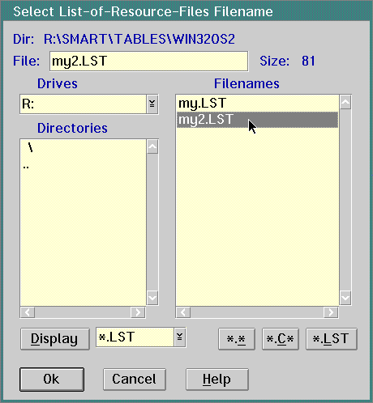
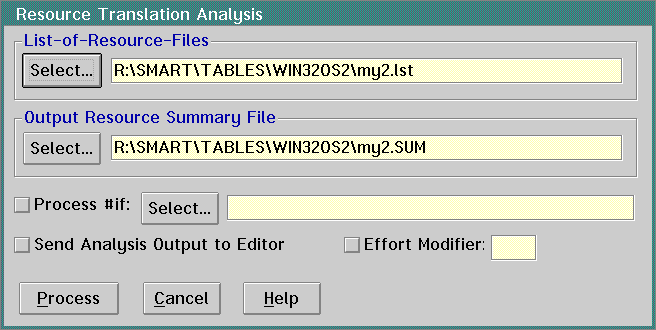

Analyzing Windows Resource Files
- On the SMART2 Source Migration window, go to
the Analysis pull-down. Select Analyze Resource Code.
- SMART displays the Select File for a List-of-Resource-Files
dialog. In this dialog, SMART2 automatically chooses the list of files you
created previously. (See Telling
SMART Where the Source Files Are.)
a.
Select the list (LST) of files that contains
the RC files to analyze.
b.
Click on the Ok push button.
3 .
SMARTdisplaystheResourceTranslationAnalysisdialog
.ClickontheProcesspushbutton .
4.
SMART displays a progress informational dialog
to show the progress of the analysis.
5.
SMART
returns you to the SMART2 Source Migration window. To see the resource analysis
report: